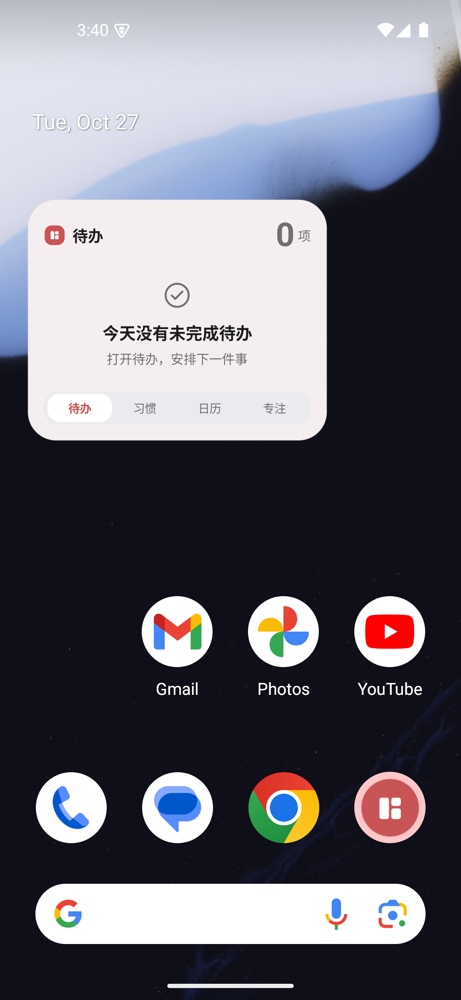
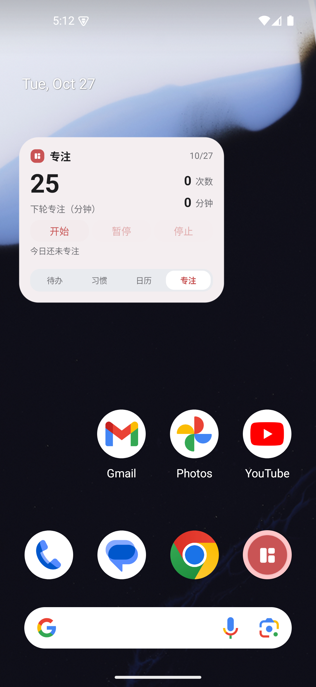

小组件三项交互验收
日历：滑动月份
2026-10 完整 31 天；向上滑动看到 2026-11；refresh 保持位置；Today 返回当前月。
滑动到其他月份
refresh 保位
Today 返回
待办：滚动与排序
12 条测试待办按 重要且紧急 → 不重要但紧急 → 重要但不紧急 → 不重要且不紧急 排列，顶部 Q1、末尾 Q4。
顶部：Q1
末尾：Q4
清理后空态

专注：开始 / 暂停 / 继续 / 停止
最终包一次单击 Start 进入 running；Pause 冻结 1448 秒并将首按钮改为“继续”；Resume 由持久化状态确认同 session rev3 running；Stop 回到新 idle session。
Running
Pause 前按钮
Paused
Stopped / idle

验证边界
`verification.json` 明确记录了旧失败观察、Resume 截图超时和单点修复前的自动化门禁，未将它们混称为最终包的稳定通过；本页只展示稳定验收截图。